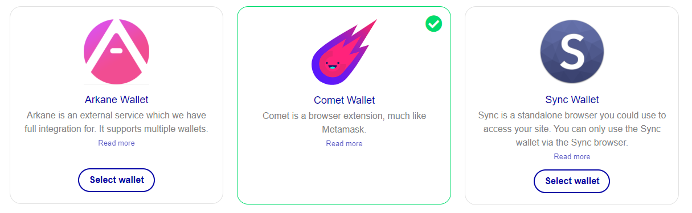

FundRaising User Guide¶

Step-by-Step Instructions for ThorBlock Fundraising
-
Select ThorBlock Fundraising
-
Getting Started
Step 1: Login/Register¶
SafeID
You will need a SafeID account to make use of ThorBlock services. SafeID is the identity-, access-, and payment-management system for all Safe Haven solutions. If you already have a SafeID account, click Login in the top-right corner and proceed with Step 2. If you haven’t yet created a SafeID account, click Register in the top-right corner.
-
Enter the correct information in the required fields and click on Register to finish creating your account.
-
Once created, an account verification email will be sent to the email address you provided.
-
Click the verification link in the email to verify your account.
-
Your account should be successfully created and you will be taken to your account Dashboard where you can proceed with the following step.
Step 2: Choose a Wallet Provider¶
https://fundraising.thorblock.io/account/
First Time Login
If this is your first time logging in, you will be taken to your account Dashboard where you are able to select a wallet provider. Currently, ThorBlock only works with VET wallets. ThorBlock gives users the option to choose between three different wallet providers: Arkane, Comet, and Sync.

Arkane Wallet¶
Arkane Network is an easy-to-use blockchain wallet provider that offers support for multiple blockchains.
To select Arkane as your wallet provider, follow these steps:
-
On your ThorBlock account Dashboard, select the Arkane Wallet option. A notification will appear with the message “Wallet provider saved”.
-
In the My wallet(s) section below, you’ll have to sync the available Arkane wallets. To do this, click the Synchronize wallets button.
-
A pop-up will appear where you can log in to your Arkane Network account. If you already have an Arkane account, log in and continue with the next step. If you haven’t yet created an Arkane wallet, click Create Account and perform the following steps:
-
Sign up with your Google account, Facebook account, or enter your desired account details and click the Create Account button.
-
Read and the Terms & Conditions and click Accept.
-
Complete the email verification step.
-
When Arkane Network asks for access to ThorBlock, click Allow.
-
Arkane will ask you to set up a master PIN for your account. Enter a PIN of 4-6 digits and continue to finish creating your Arkane account.
-
Arkane will ask you to create a new VET wallet or will create one for you within 5 seconds.
-
The pop-up will close once a wallet is created.
-
In the drop-down menu of the My wallet(s) section of the ThorBlock page, click the Arkane wallet you would like to use for ThorBlock.
-
You can access your Arkane wallet at https://app.arkane.network. Here you can also manage your tokens or import an existing wallet.
-
Once your wallet has the required VTHO and SHA tokens, you are ready to fund a project or create your own. Continue with Step 3.
Comet Wallet¶
Comet is a Chrome extension that provides a decentralized browser-based cryptocurrency wallet for the VeChainThor blockchain.
Comet
Before you can use Comet as your wallet provider, you’ll need to install the Chrome extension. You can download the Chrome extension here. Once you have installed the extension, you will have to create a wallet and fund it with tokens.
-
Open the extension in your Chrome browser
-
If you already have a Comet wallet or would like to import an existing VET wallet:
-
Click Existing User
-
Read the Terms of Use and click I Accept
-
Set a 4-digit PIN and confirm the PIN
-
Enter the seed words of the wallet you would like to import and click Restore.
-
If you do not have a Comet wallet yet:
-
Click New User
-
Read the Terms of Use and click I Accept
-
Set a 4-digit PIN and confirm the PIN
-
Click View Recovery Seed
-
Write down and store your 12 seed words in a secure place - do not lose these!
-
Press the checkmark icon (✔) to finish creating your wallet.
-
To fund your Comet wallet, click Deposit in the Comet extension and send your tokens to the provided address.
Commet support
Comet only supports the sending of VET and VTHO. However, you can still send other tokens to this address. If you want to see and manage tokens other than VET or VTHO in your Comet wallet, you can use the MySafeWallet web interface made by Safe Haven at https://mysafewallet.io.
-
To select Comet as your wallet provider, follow these steps:
-
On your ThorBlock account Dashboard, select the Comet Wallet option. A notification will appear with the message “Wallet provider saved”.
-
In the My wallet(s) section below, you’ll have to sync the available Comet wallet. To do this, click the Synchronize wallets button.
-
A Comet pop-up will appear asking to allow ThorBlock to view and save the current Comet address. Click Confirm.
Once your wallet has the required VTHO and SHA tokens, you are ready to fund a project or create your own. Continue with Step 3.
Sync Wallet¶
Sync is the official desktop wallet and dApp browser of the VeChainThor blockchain. Sync is available on Windows, MacOS, and Linux.
Sync
Before you can use Sync as your wallet provider, you will need to install the desktop application, which can be downloaded at https://env.vechain.org.
-
Using Sync as the wallet provider is only possible in the Sync browser. Once you have installed Sync, you will have to create a wallet and fund it with tokens.
-
Open the Sync application
-
Click on the Wallets icon to the right of the address field to open the Wallets page.
-
If you want to import an existing VET wallet:
-
Click the Import button
-
Choose to import your wallet by keystore, mnemonic words or private key and enter the required information. Click Next.
-
Give the wallet a name and a password and click Import.
-
If you want to create a new VET wallet:
-
Click the Create button
-
Give your new wallet a name and a password and click Next.
-
Write down and store your 12 mnemonic words in a secure place. Do not lose these! If you have correctly stored your mnemonic words, click Next.
-
Confirm your mnemonic words by selecting them in the right order and click Next.
-
You have now successfully created a wallet in Sync!
-
To fund your Sync wallet, select your wallet on the Wallets page and send your tokens to the provided address.
Sync Support
Sync currently only supports the sending of VET and VTHO. However, you can still send other tokens to this address. If you want to see and manage tokens other than VET or VTHO in your Sync wallet, you can use the MySafeWallet web interface made by Safe Haven at https://mysafewallet.io.
-
To use Sync as your wallet provider, follow these steps:
-
Open ThorBlock in your Sync browse. You must open ThorBlock within the Sync wallet’s embedded browser.
-
On your ThorBlock account Dashboard, select the Sync Wallet option. A notification will appear with the message “Wallet provider saved”.
-
In the My wallet(s) section below, you’ll have to sync the available Sync wallets. To do this, click the Synchronize wallets button.
-
A pop-up will appear asking to allow ThorBlock to view and save the selected Sync address. Select the wallet you want to use and click Next.
-
Enter the wallet password and click Sign to complete the signature request.
-
Once your wallet has the required VTHO and SHA tokens, you are ready to fund a project or create your own. Continue with Step 3.
Step 3: Creating a Project¶
https://fundraising.thorblock.io/start-a-project/
- To create your own fundraising project, click on Start a Project on the menu bar at the top of the page or on your Account page.
Min SHA holding requirements
To be able to create a fundraising project you need a VET wallet that holds at least 25k SHA. See this Medium article for additional token holding requirements. Additionally, to create a pool you will need at least 6.5k VTHO in the same wallet. Before you follow these instructions,make sure you have a wallet linked and funded with the required tokens.
-
On the Start a project page, you will first have to set the funding method. The funding method can't be changed after you have created the project.
-
In the drop-down menu under Thorblock Pool, you can choose to create a new pool address or select a pool address you have previously created. (This option is only available if you have already successfully created a project before.)
-
In the drop-down menu under VeChainThor Wallet, select the wallet from the wallet provider you have chosen to use. This wallet will be the admin wallet and will need to be funded with at least 25k SHA and 6.5k VTHO.
-
In the drop-down menu under Funding Token address, choose the token you want your fundraising project to be funded with.
-
In the field under Funding goal, enter the total amount you want to raise in the token of your choosing.
-
In the field under Minimum per contributor, enter the minimum amount of tokens that a contributor can contribute to your project.
-
Enter the name of your project in the Title field. The name can be changed at a later time.
-
Click the Create project button at the bottom.
-
A pop-up window from your selected wallet provider will open and ask for confirmation of the transaction that will create the pool for your project.
-
Confirm you are using the correct admin wallet.
-
Make sure that the amount of VTHO in your wallet covers the (max) fee needed for the transaction. Do not lower the (max) fee as this may cause the transaction to be reverted.
-
If using Arkane as your wallet provider, enter the PIN you set for your Arkane wallet.
-
Click Confirm or Next.
-
If using Sync, enter your wallet password and click Sign.
-
Once you have completed these steps a draft of your project is created and a pool will be created for your project. You can check the status of your pool creation transaction.
-
Once the transaction has been completed you can continue the process by connecting your pool to your project on the My pool(s) page.
-
Select the pool you have just created and click Connect to project to use it for your project. Alternatively, you can select a previously created pool if you wish to do so. Once your project is published, the pool cannot be changed.
-
You will be taken to the draft page of your project. Here you can:
-
Edit the project title
- Add or edit an image for your project
- Add a description of your project in the About section.
-
Publish the project or save the draft.
-
To finish creating your fundraising project, click Publish project.
Step 4: Funding a Project¶
https://fundraising.thorblock.io/projects/
To start funding a project, click on Explore Fundraising Projects on the menu bar at the top of the page.
Step 5: Managing a Project¶
https://fundraising.thorblock.io/account/projects/
-
Go to My account
-
Go to My projects
-
Select the project you would like to manage
-
Click Edit or Project details
-
You can edit the project title, project image or the about section.
-
You can see the amount of tokens raised.
-
You can see the ThorBlock pool address.
-
For advanced options, click Admin actions. Here you can:
- Transfer the funds in the pool (this will end the project)
- Change the destination address
- Change the token address
- Cancel the pool/project